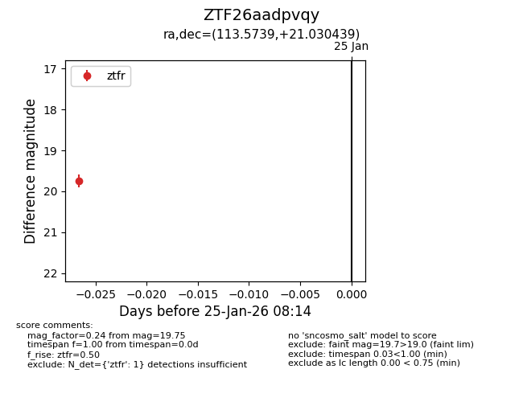
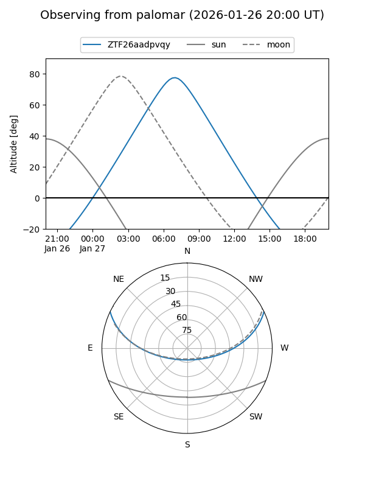

ZTF26aadpvqy
Target ZTF26aadpvqy at 2026-01-25 08:16
Aliases and brokers:
FINK: link
Lasair: link
ALeRCE: link
alt names
ZTF26aadpvqy (ztf,fink_ztf)
Coordinates:
equatorial (ra, dec) = 113.5739,+21.03044
equatorial (HMS+DMS) = 07:34:17.74,+21:01:49.58
galactic (l, b) = (198.2520,+18.54663)
Flags:
Photometry:
last ztfr=19.75
1 ztfr detections
Lightcurve

Visibility


Additional plots